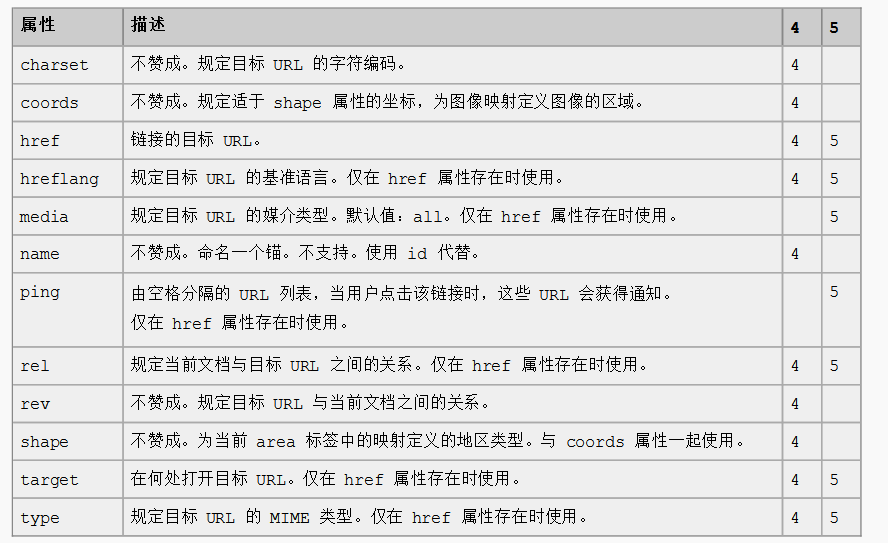

HTML 5 < a >标签
目录
定义和用法
<a>标签定义超链接，它用于从一个页面连接到另一个页面。
返回目录
HTML 4.01 与 HTML 5 之间的差异
在 HTML 4.01 中，<a>标签既可以是超链接，也可以是锚。这取决于是否描述了 href 属性。
在 HTML 5 中，<a> 是超链接，但是假如没有 href 属性，它仅仅是超链接的一个占位符。
HTML 5 有一些新的属性，同时不再支持一些 HTML 4.01 的属性。
返回目录
例子：
属性

标准属性
class, contenteditable, contextmenu, dir, draggable, id,
irrelevant, lang, ref, registrationmark, tabindex, template, title如需完整的描述，请访 HTML 5 中标准属性。
事件属性
onabort, onbeforeunload, onblur, onchange, onclick, oncontextmenu,
ondblclick, ondrag, ondragend, ondragenter, ondragleave, ondragover,
ondragstart, ondrop, onerror, onfocus, onkeydown, onkeypress, onkeyup,
onload, onmessage, onmousedown, onmousemove, onmouseover, onmouseout,
onmouseup, onmousewheel, onresize, onscroll, onselect, onsubmit, onunload